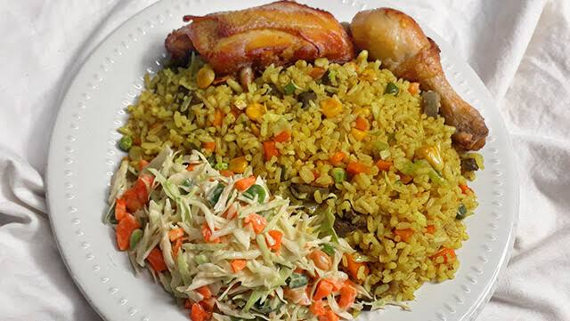

Fried RIce recipe

Description
Fried rice is a versatile, savory dish made by stir-frying cooked rice in a wok
or skillet with oil, soy sauce, and aromatics. It is commonly mixed with scrambled
eggs, diced vegetables (like peas and carrots), and proteins such as chicken, shrimp,
or beef.
Ingredients
- 3 cups easy cook rice
- 2 cups of chicken/beef stock
- 21/2 tablespoons butter
- 3/4 medium size red onion chopped
- 1/4 red pepper, green bell pepper and scotch bonnet chopped
- 1/2 cup green peas
- 2 carrots chopped
- 1 cup frozen prawns
- 1 cup diced chicken
- 1 cup diced liver/kidney
- 3 garlic cloves minced
- 1/2 tablespoon curry powder
- 1/2 teaspoon thyme
- 1/2 teaspoon white pepper
- 1/2 teaspoon black pepper
- 1 knorr chicken cube
- 1/2 teaspoon preferred spice, I use Aromat
- Salt to taste
Steps
- Prep the Rice: Cook your long-grain rice so it is 80% done, then spread it on a tray and let it cool completely. Day-old cold rice is best because it prevents mushiness.
- Scramble Eggs & Cook Proteins: Heat cooking oil in a pan, scramble your eggs, and set them aside. Cook your chosen proteins (like diced chicken, shrimp, or liver) until done, then remove them from the pan.
- Sauté the Vegetables: Using the same pan, stir-fry your harder vegetables (like carrots and green beans) for 2–3 minutes, then add softer ones (like peas, sweet corn, and bell peppers). Add your chopped onions, garlic, and ginger.
- Combine and Season: Add the cooked rice, proteins, and scrambled eggs to the pan with the vegetables. Toss continuously on high heat, breaking up any rice clumps. Season with soy sauce (or curry/thyme for a Nigerian style) and sesame oil.
- Finish: Stir in your chopped spring onions and turn off the heat immediately so they stay vibrant.
Home